Your note: small chests looked the same secured or not. Fixed = three changes at once: shape (open is taller), brightness (closed is dim) and light (beam + warm pool). Keys = icon acts.
REAL SIZE, NO ZOOM · left before, right fixed (and the same in grey: brightness alone)
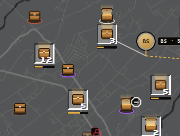
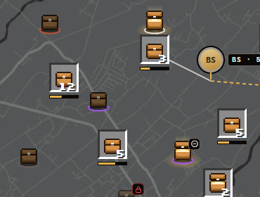
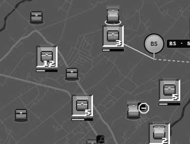
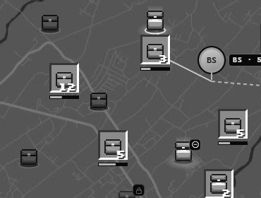
THE SECURE MOMENT · one shop, frame by frame
CHEST · BEFORE
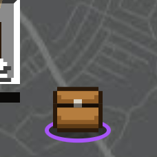
0 ms
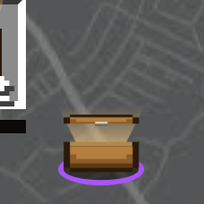
100 ms220 ms380 ms
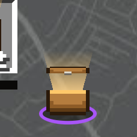
600 ms1400 msbubble goes full
CHEST · FIXED
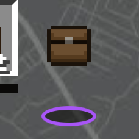
0 ms
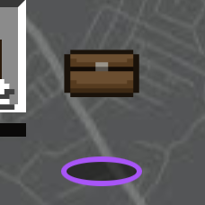
100 ms
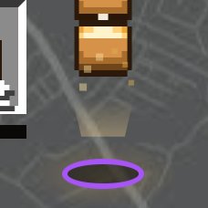
220 ms
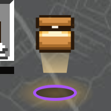
380 ms600 ms
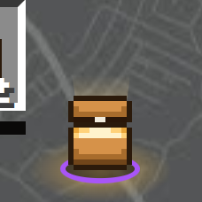
1400 ms
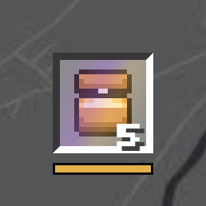
bubble goes full
PC · 1440
TODAY gold number, gold ring and an orange glow on every bubble; emoji pinsCHEST · BEFORE closed and open: same wood, same size - only the lid and a thin glow change